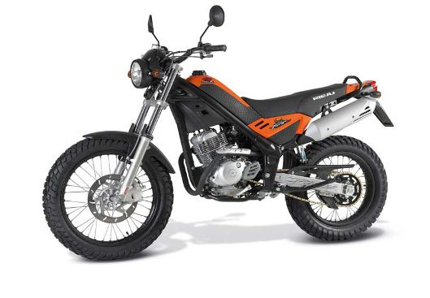

DIMENTSIOAK

Motorraren luzeera 1.990 mm -koa da, eta altuera 1.530 mm-koa. Motorraren dimentsioak motor txiki batenak dira, bere zilindrada dela eta. 101 Kg-ko pisua; arina da, beraz erraza eta dibertigarria egiten da gidatzea.
Depositoaren kapazitatea 5,5 l -koa da. Gutxi gora-behera 100 Km-ko autonomia du.
| Luzeera maximoa | 1.990 mm |
| Lodiera maximoa | 800 mm |
| Altuera maximoa | 1.530 mm |
| Ardatzen arteko distantzia | 1.305 mm |
| Eserlekuaren altuera | 800 mm |
| Depositoaren kapazitatea | 5,5 l. |
| Guztirako pisua | 101 Kg. |